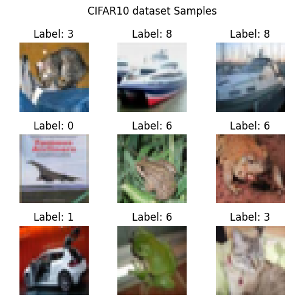
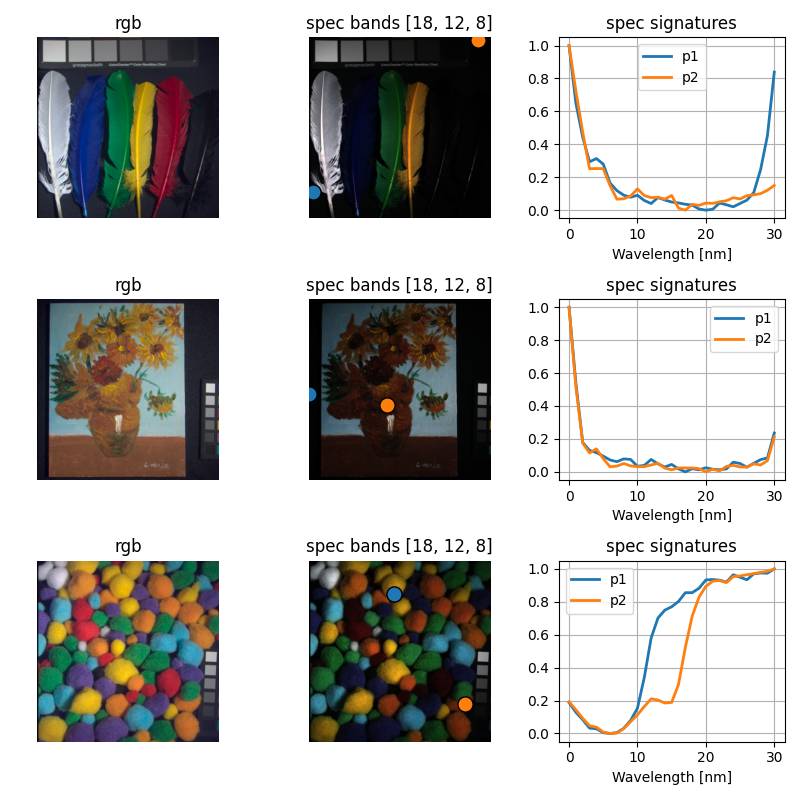

Note
Go to the end to download the full example code.
Demo Datasets.
In this example we show how to use the custom dataset class to load the predefined datasets in the repository.
Select Working Directory and Device
import os
from random import randint
from torch.utils.data import DataLoader
os.chdir(os.path.dirname(os.getcwd()))
print("Current Working Directory ", os.getcwd())
Current Working Directory /home/runner/work/pycolibri/pycolibri
Load builtin dataset
from colibri.data.datasets import CustomDataset
name = 'cifar10' # ['cifar10', 'cifar100', 'mnist', 'fashion_mnist', 'cave']
path = 'data'
batch_size = 128
dataset = CustomDataset(name, path)
dataset_loader = DataLoader(dataset, batch_size=batch_size, shuffle=False, num_workers=0)
0%| | 0.00/170M [00:00<?, ?B/s]
1%| | 1.90M/170M [00:00<00:08, 19.0MB/s]
5%|▌ | 8.78M/170M [00:00<00:03, 48.1MB/s]
8%|▊ | 14.4M/170M [00:00<00:03, 51.6MB/s]
12%|█▏ | 20.1M/170M [00:00<00:02, 53.5MB/s]
15%|█▌ | 25.6M/170M [00:00<00:02, 54.1MB/s]
18%|█▊ | 31.3M/170M [00:00<00:02, 54.9MB/s]
22%|██▏ | 36.9M/170M [00:00<00:02, 55.1MB/s]
25%|██▍ | 42.4M/170M [00:00<00:02, 55.2MB/s]
28%|██▊ | 48.1M/170M [00:00<00:02, 55.7MB/s]
32%|███▏ | 53.7M/170M [00:01<00:02, 55.6MB/s]
35%|███▍ | 59.3M/170M [00:01<00:01, 55.6MB/s]
38%|███▊ | 64.9M/170M [00:01<00:01, 55.3MB/s]
41%|████▏ | 70.5M/170M [00:01<00:01, 50.6MB/s]
44%|████▍ | 75.6M/170M [00:01<00:02, 44.8MB/s]
47%|████▋ | 80.2M/170M [00:01<00:02, 42.1MB/s]
50%|████▉ | 84.6M/170M [00:01<00:02, 40.2MB/s]
52%|█████▏ | 88.7M/170M [00:01<00:02, 39.4MB/s]
54%|█████▍ | 92.7M/170M [00:01<00:02, 38.7MB/s]
57%|█████▋ | 96.7M/170M [00:02<00:01, 37.7MB/s]
59%|█████▉ | 100M/170M [00:02<00:01, 37.2MB/s]
61%|██████ | 104M/170M [00:02<00:01, 37.1MB/s]
63%|██████▎ | 108M/170M [00:02<00:01, 37.1MB/s]
65%|██████▌ | 112M/170M [00:02<00:01, 37.2MB/s]
68%|██████▊ | 115M/170M [00:02<00:01, 37.1MB/s]
70%|██████▉ | 119M/170M [00:02<00:01, 37.2MB/s]
72%|███████▏ | 123M/170M [00:02<00:01, 37.2MB/s]
74%|███████▍ | 127M/170M [00:02<00:01, 37.1MB/s]
76%|███████▋ | 130M/170M [00:02<00:01, 37.1MB/s]
79%|███████▊ | 134M/170M [00:03<00:00, 37.2MB/s]
81%|████████ | 138M/170M [00:03<00:00, 37.2MB/s]
83%|████████▎ | 142M/170M [00:03<00:00, 37.1MB/s]
85%|████████▌ | 145M/170M [00:03<00:00, 37.2MB/s]
88%|████████▊ | 149M/170M [00:03<00:00, 37.2MB/s]
90%|████████▉ | 153M/170M [00:03<00:00, 37.2MB/s]
92%|█████████▏| 157M/170M [00:03<00:00, 37.1MB/s]
94%|█████████▍| 160M/170M [00:03<00:00, 37.0MB/s]
96%|█████████▋| 164M/170M [00:03<00:00, 37.2MB/s]
98%|█████████▊| 168M/170M [00:03<00:00, 37.1MB/s]
100%|██████████| 170M/170M [00:04<00:00, 42.0MB/s]
Visualize cifar10 dataset
import matplotlib.pyplot as plt
data = next(iter(dataset_loader))
image = data['input']
label = data['output']
plt.figure(figsize=(5, 5))
plt.suptitle(f'{name.upper()} dataset Samples')
for i in range(9):
plt.subplot(3, 3, i + 1)
plt.imshow(image[i].permute(2, 1, 0).cpu().numpy())
plt.title(f'Label: {label[i]}')
plt.axis('off')
plt.tight_layout()
plt.show()

Cave dataset
CAVE is a database of multispectral images that were used to emulate the GAP camera. The images are of a wide variety of real-world materials and objects. You can download the dataset from the following link: http://www.cs.columbia.edu/CAVE/databases/multispectral/ Once downloaded, you must extract the files and place them in the ‘data’ folder.
import requests
import zipfile
import os
dataset = CustomDataset("cave", path)
dataset_loader = DataLoader(dataset, batch_size=batch_size, shuffle=False, num_workers=0)
Visualize cave dataset
def normalize(image):
return (image - image.min()) / (image.max() - image.min())
data = next(iter(dataset_loader))
rgb_image = data['input']
spec_image = data['output']
[_, _, M, N] = spec_image.shape
plt.figure(figsize=(8, 8))
for i in range(3):
coord1 = [randint(0, M), randint(0, N)]
coord2 = [randint(0, M), randint(0, N)]
plt.subplot(3, 3, (3 * i) + 1)
plt.imshow(normalize(rgb_image[i].permute(1, 2, 0).cpu().numpy()))
plt.title('rgb')
plt.axis('off')
plt.subplot(3, 3, (3 * i) + 2)
plt.imshow(normalize(spec_image[i, [18, 12, 8]].permute(1, 2, 0).cpu().numpy()))
plt.scatter(coord1[1], coord1[0], s=120, edgecolors='black')
plt.scatter(coord2[1], coord2[0], s=120, edgecolors='black')
plt.title('spec bands [18, 12, 8]')
plt.axis('off')
plt.subplot(3, 3, (3 * i) + 3)
plt.plot(normalize(spec_image[i, :, coord1[0], coord1[1]].cpu().numpy()), linewidth=2, label='p1')
plt.plot(normalize(spec_image[i, :, coord2[0], coord1[1]].cpu().numpy()), linewidth=2, label='p2')
plt.title('spec signatures')
plt.xlabel('Wavelength [nm]')
plt.grid()
plt.legend()
plt.tight_layout()
plt.show()

Total running time of the script: (0 minutes 21.580 seconds)